高效 LLM 推理服务基础 III：批处理、分页与并行
推理服务的指标与评测陷阱；连续批处理与选择性批处理、分块预填充与 PD 分离、SJF 类调度；PagedAttention 与前缀缓存；DP / TP / PP / EP / 上下文并行。
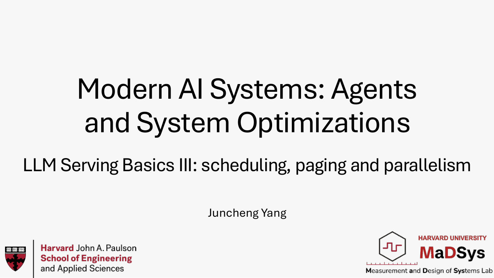
现代 AI 系统：智能体与系统优化
Juncheng Yang
LLM 推理服务基础 III：调度、分页与并行
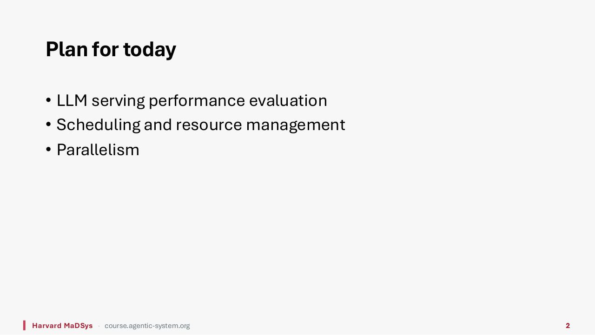
今天的安排
- LLM 推理服务的性能评测
- 调度与资源管理
- 并行
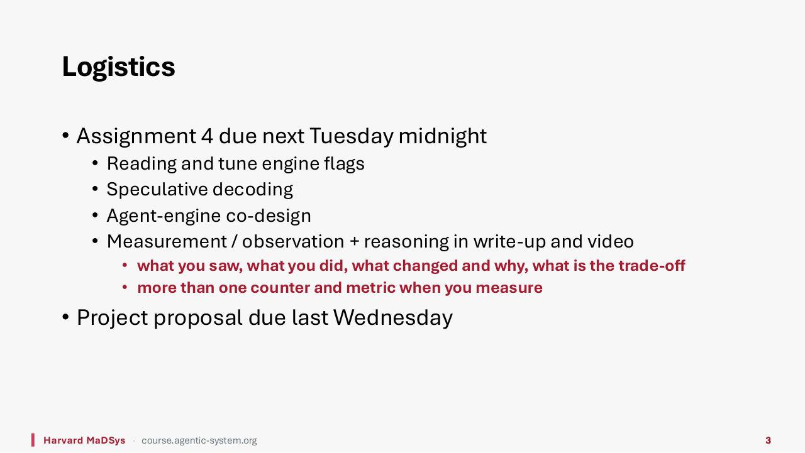
事务安排
- 作业 4 下周二午夜截止
- 阅读并调优引擎参数
- 推测解码
- 智能体—引擎协同设计
- 报告和视频中要有测量/观察 + 推理
- 你看到了什么、做了什么、什么变了以及为什么、权衡是什么
- 测量时要看不止一个计数器和指标
- 项目提案已于上周三截止
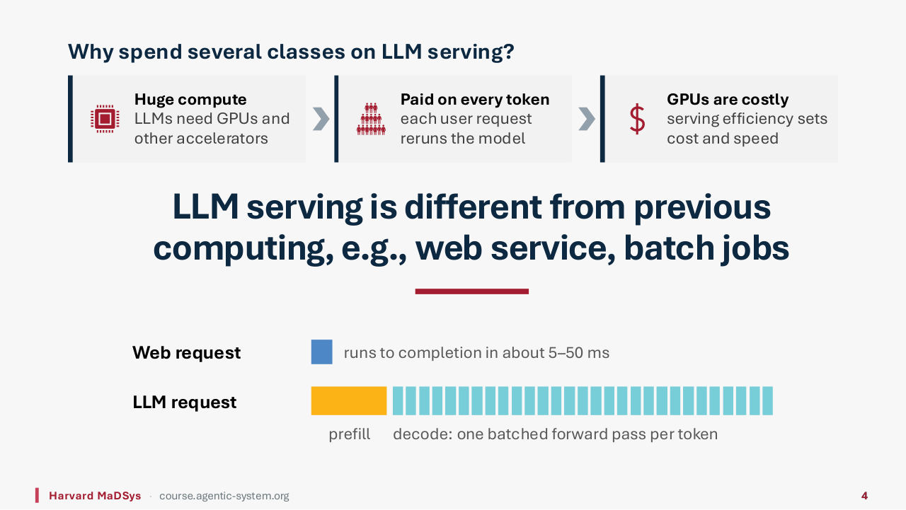
LLM 推理服务不同于以往的计算，例如 Web 服务、批处理作业
- Web 请求：约 5–50 ms 就运行完毕
- LLM 请求：预填充 → 解码：每个 token 一次批量前向
为什么要花好几节课讲 LLM 推理服务？
- 计算量巨大：LLM 需要 GPU 及其他加速器
- 每个 token 都要付费：每个用户请求都要重新运行模型
- GPU 很贵：推理服务的效率决定了成本和速度
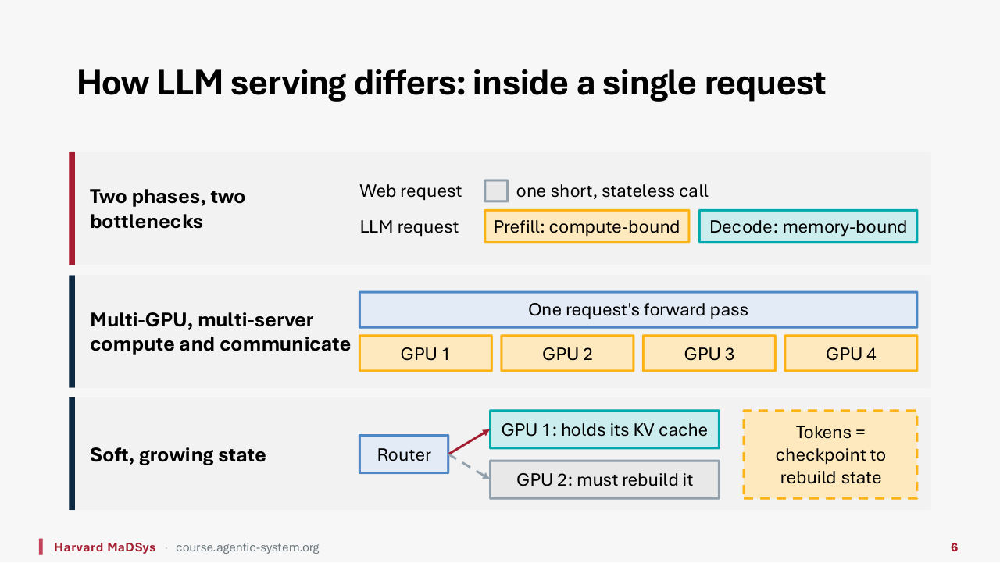
LLM 推理服务的不同：单个请求内部
- 两个阶段，两种瓶颈：Web 请求是一次短暂的无状态调用；LLM 请求的预填充受计算限制、解码受内存限制
- 多 GPU、多服务器的计算与通信：一个请求的前向传播可能横跨 GPU 1–4
- 软状态，且不断增长：路由器 → GPU 1 持有它的 KV cache；若路由到 GPU 2，就必须重建
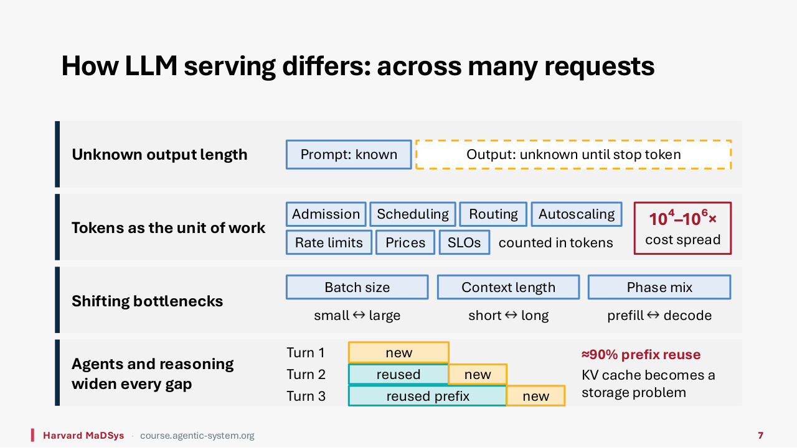
LLM 推理服务的不同：跨多个请求
- 输出长度未知：提示词长度已知；输出长度直到遇到停止 token 才知道
- 以 token 为工作单位：准入、调度、路由、自动扩缩容、限流、价格、SLO 都以 token 计；成本差距可达 10⁴–10⁶ 倍
- 瓶颈不断转移：batch 大小（小 ↔ 大）、上下文长度（短 ↔ 长）、阶段构成（预填充 ↔ 解码）
- 智能体和推理把每个差距都拉大了：第 1 轮全新；第 2 轮复用 + 新增；第 3 轮复用前缀 + 新增——约 90% 的前缀复用
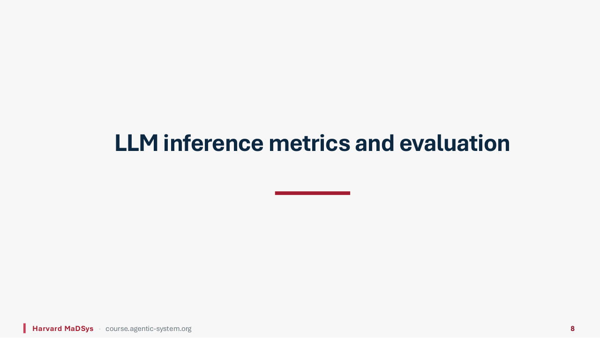
LLM 推理的指标与评测
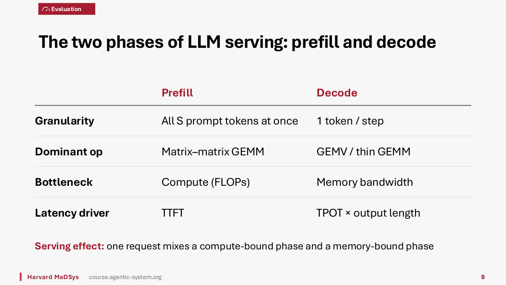
LLM 推理服务的两个阶段：预填充与解码
| 预填充 | 解码 | |
|---|---|---|
| 粒度 | 一次处理全部 S 个提示词 token | 每步 1 个 token |
| 主导运算 | 矩阵—矩阵 GEMM | GEMV / 窄 GEMM |
| 瓶颈 | 计算（FLOPs） | 内存带宽 |
| 决定的延迟 | TTFT | TPOT × 输出长度 |
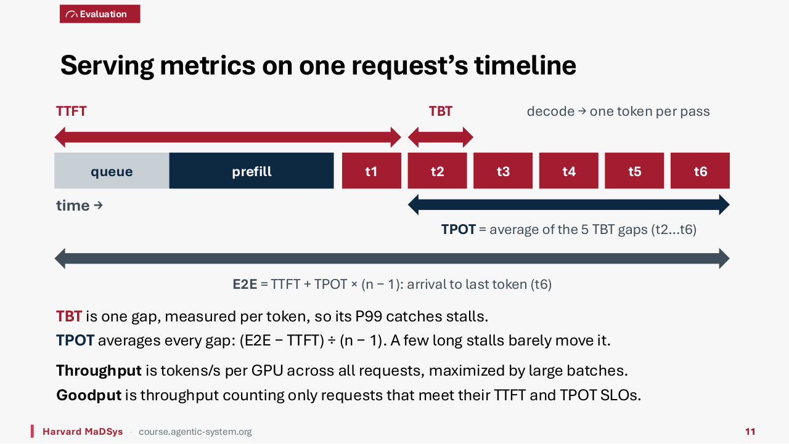
一个请求时间线上的推理服务指标
排队 → 预填充 → t1（首 token）→ 解码，每次前向一个 token → t2 … t6
- TTFT（首 token 延迟）：从到达到第一个 token
- TBT（token 间隔）：一个间隔，按 token 测量，所以它的 P99 能捕捉到卡顿
- TPOT（每输出 token 耗时）= 5 个 TBT 间隔（t2…t6）的平均值 = (E2E − TTFT) ÷ (n − 1)。少数几次长卡顿几乎不影响它
- E2E = TTFT + TPOT × (n − 1)：从到达到最后一个 token（t6）
- 吞吐量：所有请求合计的每 GPU 每秒 token 数，通过大 batch 来最大化
- 有效吞吐（Goodput）：只计算满足 TTFT 和 TPOT SLO 的请求的吞吐量
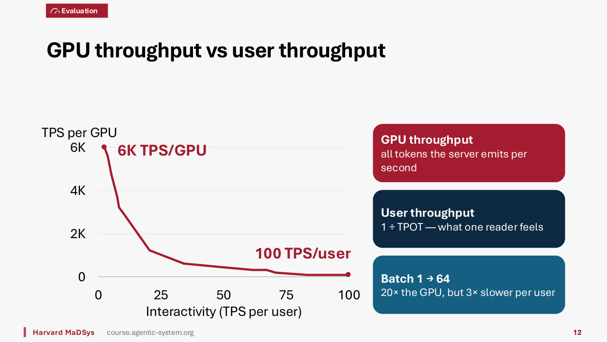
GPU 吞吐 vs 用户吞吐
- GPU 吞吐：服务器每秒输出的全部 token
- 用户吞吐：1 ÷ TPOT——单个读者的体感
- batch 从 1 → 64：GPU 吞吐提高 20 倍，但每个用户慢了 3 倍
（图：横轴为交互性（每用户 TPS），纵轴为每 GPU TPS；例如 6K TPS/GPU 对应 100 TPS/用户）
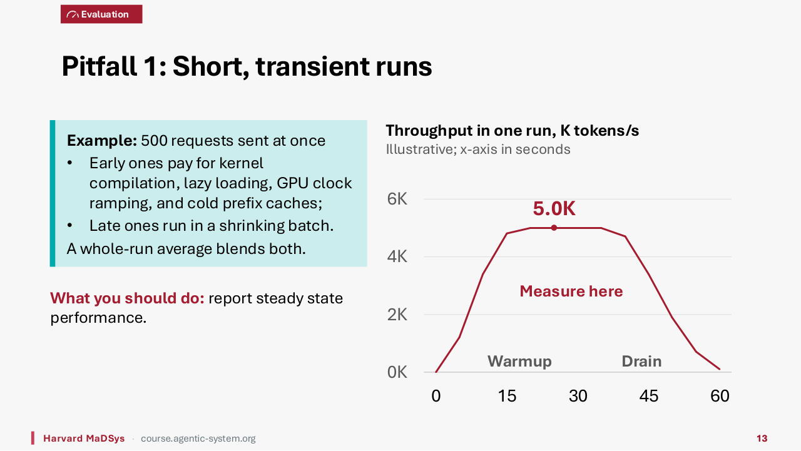
陷阱 1：短暂的瞬态运行
例子：一次性发送 500 个请求
- 早期请求要承担 kernel 编译、懒加载、GPU 时钟爬升和冷的前缀缓存的代价
- 后期请求在不断缩小的 batch 中运行
- 整次运行的平均值把两者混在了一起
（图：一次运行中的吞吐量——预热期、可测量区间（约 5.0K tokens/s）、排空期；示意图，横轴为秒）
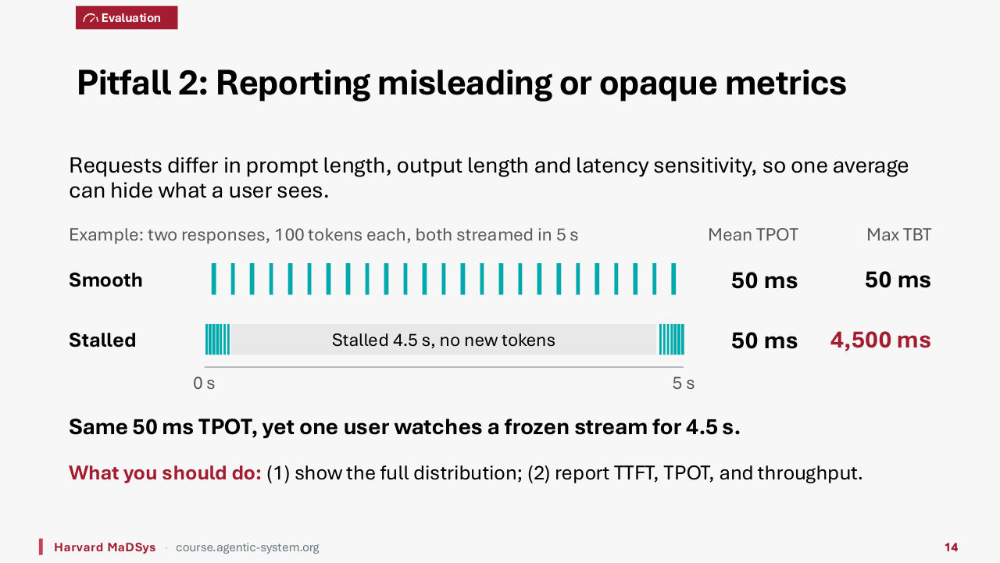
陷阱 2：报告误导性或不透明的指标
请求在提示词长度、输出长度和延迟敏感度上各不相同，所以一个平均值可能掩盖用户的真实感受。
例子：两个回复，各 100 个 token，都在 5 秒内流式输出完毕
| 平均 TPOT | 最大 TBT | |
|---|---|---|
| 平滑 | 50 ms | 50 ms |
| 卡顿（卡了 4.5 s 没有新 token） | 50 ms | 4,500 ms |
你应该做的：(1) 展示完整分布；(2) 报告 TTFT、TPOT 和吞吐量。
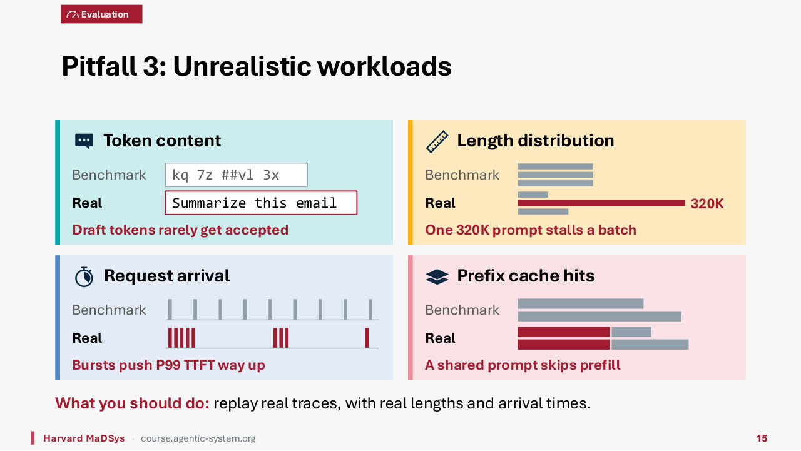
陷阱 3：不真实的负载
- token 内容：基准中是随机乱码（kq 7z ##vl 3x），真实场景是“总结这封邮件”——草稿 token 很少被接受
- 长度分布：真实场景中一个 320K 的提示词就能拖住整个 batch
- 请求到达：真实场景中的突发流量会把 P99 TTFT 推得很高
- 前缀缓存命中：真实场景中共享的提示词可以跳过预填充
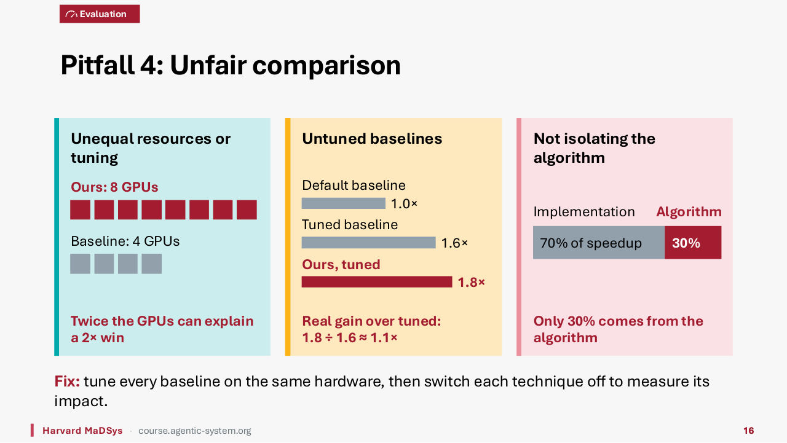
陷阱 4：不公平的比较
- 资源或调优不对等：我们用 8 块 GPU，基线用 4 块——GPU 翻倍就足以解释 2 倍的提升
- 基线未调优：默认基线 1.0×，调优后的基线 1.6×，我们的方法（调优后）1.8×——相对调优基线的真实提升：1.8 ÷ 1.6 ≈ 1.1×
- 没有隔离算法本身：加速的 70% 来自实现，只有 30% 来自算法
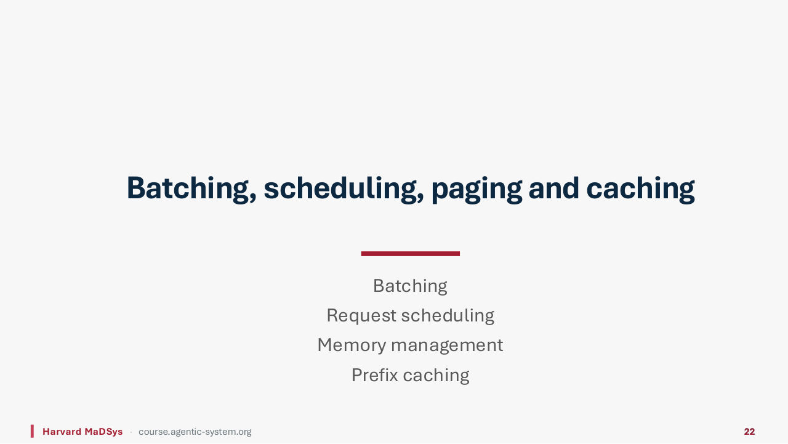
批处理、调度、分页与缓存
- 批处理
- 请求调度
- 内存管理
- 前缀缓存
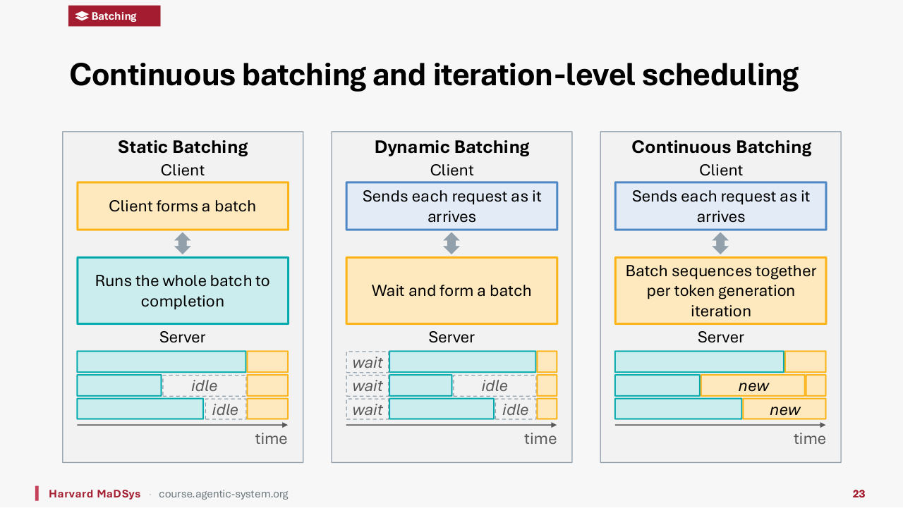
连续批处理与迭代级调度
- 静态批处理：客户端组成一个 batch，把整个 batch 运行到结束——服务器有空闲
- 动态批处理：每个请求一到就发送，服务器等待并组成 batch——有等待也有空闲
- 连续批处理：每个请求一到就发送，在每次 token 生成迭代时把序列批在一起——新请求随时加入
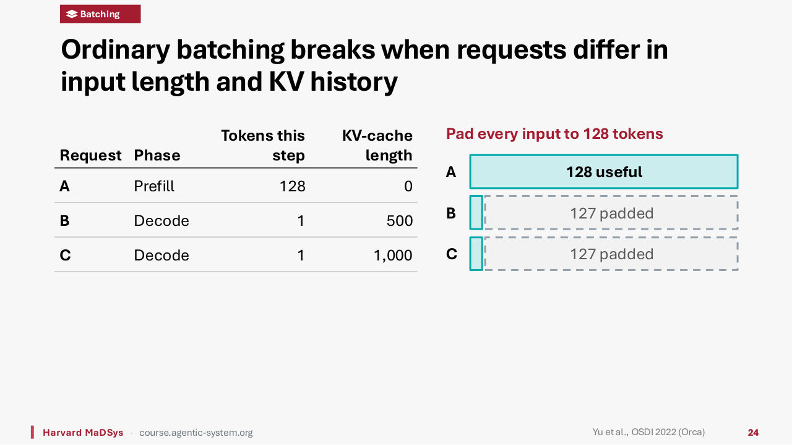
当请求的输入长度和 KV 历史不同时，普通批处理就失效了
| 请求 | 阶段 | 本步 token 数 | KV-cache 长度 |
|---|---|---|---|
| A | 预填充 | 128 | 0 |
| B | 解码 | 1 | 1,000 |
| C | 解码 | 1 | … |
如果把每个输入都填充到 128 个 token：A 有 128 个有用 token，B 和 C 各有 127 个是填充。
（Yu et al., OSDI 2022 (Orca)）
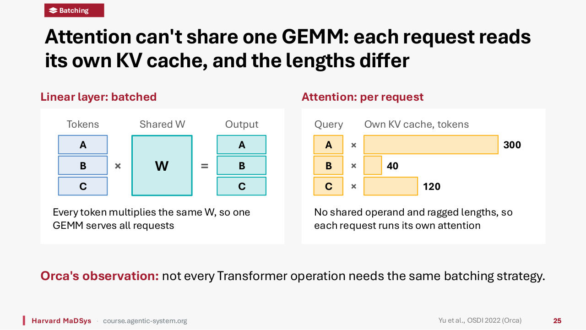
注意力无法共享一个 GEMM：每个请求读取自己的 KV cache，且长度不同
- 线性层：可批处理——每个 token 都乘以同一个 W，所以一个 GEMM 可以服务所有请求
- 注意力：按请求——没有共享的操作数，长度参差不齐，所以每个请求运行自己的注意力
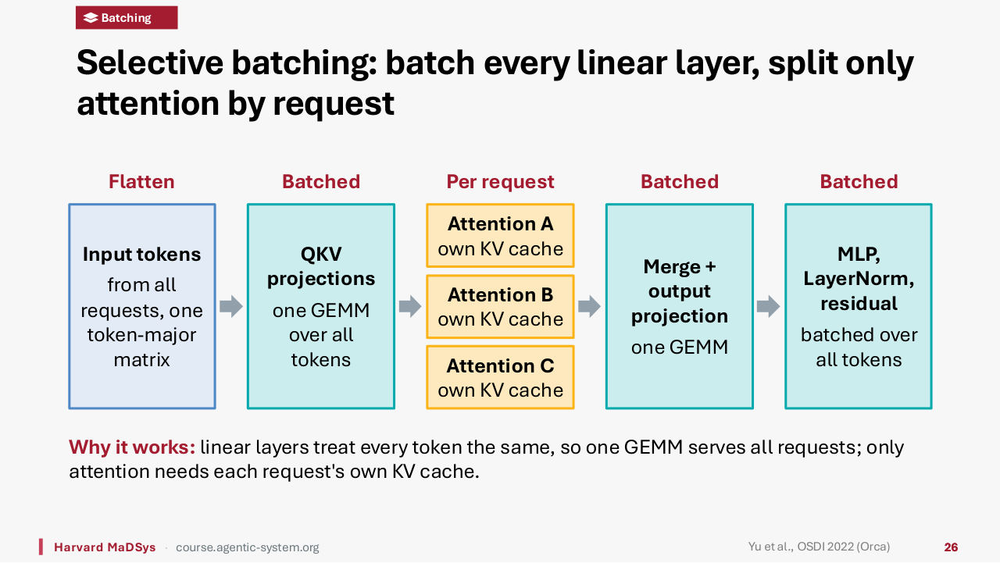
选择性批处理：所有线性层都批处理，只有注意力按请求拆分
展平（所有请求的输入 token 组成一个以 token 为主的矩阵）→ 批处理：QKV 投影（对所有 token 一个 GEMM）→ 按请求：注意力 A / B / C（各自的 KV cache）→ 批处理：合并 + 输出投影（一个 GEMM）→ 批处理：MLP、LayerNorm、残差（对所有 token 批处理）
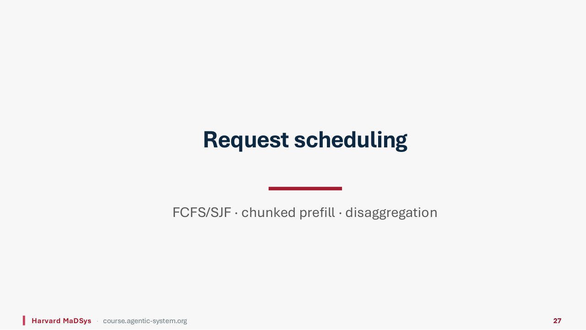
请求调度
FCFS/SJF · 分块预填充 · 预填充/解码分离
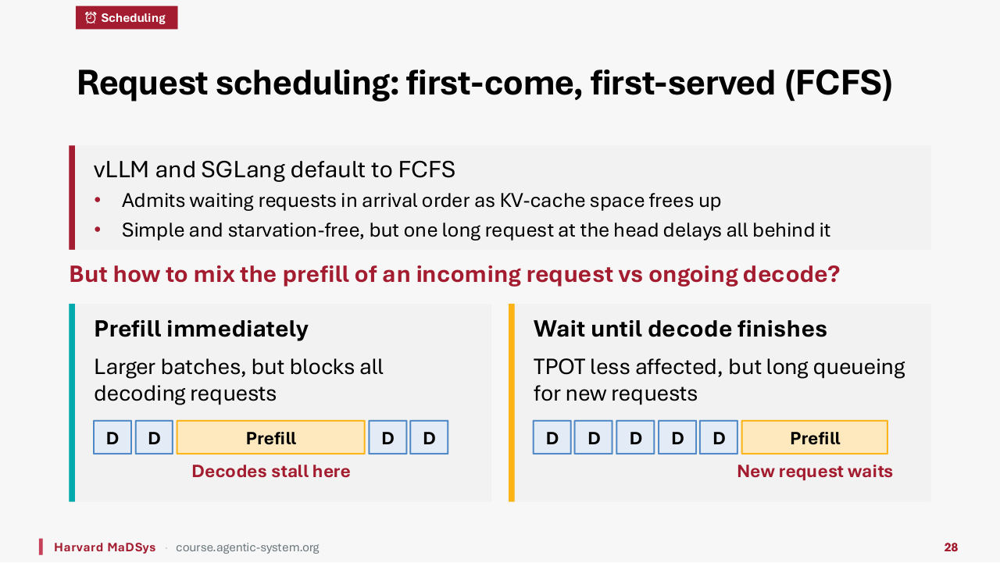
请求调度：先来先服务（FCFS）
- vLLM 和 SGLang 默认使用 FCFS
- 当 KV-cache 空间释放时，按到达顺序准入等待中的请求
- 简单且不会饿死，但队首的一个长请求会拖延后面所有请求
但是，新请求的预填充和正在进行的解码如何混合？
- 立即预填充：batch 更大，但会阻塞所有正在解码的请求（D D 预填充 D D——解码在这里停顿）
- 等解码结束：TPOT 受影响较小，但新请求要排很久的队（D D D D D 预填充——新请求在等待）
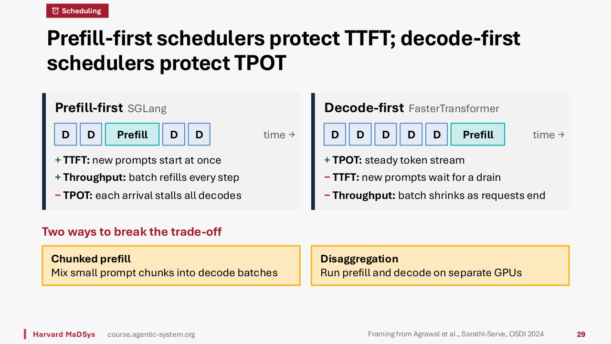
预填充优先的调度器保护 TTFT；解码优先的调度器保护 TPOT
预填充优先（SGLang）
- ＋ TTFT：新提示词立即开始
- ＋ 吞吐量：每一步都重新填满 batch
- － TPOT：每次有请求到达都会让所有解码停顿
解码优先（FasterTransformer）
- ＋ TPOT：稳定的 token 流
- － TTFT：新提示词要等排空
- － 吞吐量：随着请求结束，batch 越来越小
打破这一权衡的两种方法
- 分块预填充（Chunked prefill）：把小块提示词混入解码 batch
- 分离（Disaggregation）：在不同的 GPU 上运行预填充和解码
（框架来自 Agrawal et al., Sarathi-Serve, OSDI 2024）
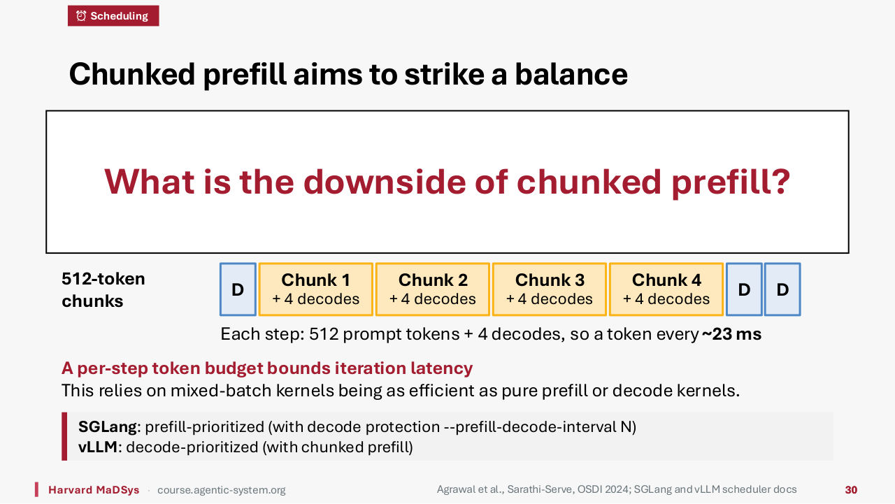
分块预填充力求取得平衡
方框宽度 = 步耗时。D = 4 个运行中请求的纯解码步。
- 不分块：D → 预填充 2,048 个 token + 4 个解码 · 92 ms → D D。运行中的请求要等 92 ms 才能拿到下一个 token
- 512 token 的分块：D → 块 1 + 4 个解码 → 块 2 + 4 个解码 → 块 3 + 4 个解码 → 块 4 + 4 个解码 → D D。每步 512 个提示词 token + 4 个解码，所以约每 23 ms 一个 token
- 每步的 token 预算限制了迭代延迟
- 这依赖于混合 batch 的 kernel 与纯预填充或纯解码 kernel 一样高效
- SGLang：预填充优先（用
--prefill-decode-interval N保护解码） - vLLM：解码优先（配合分块预填充）
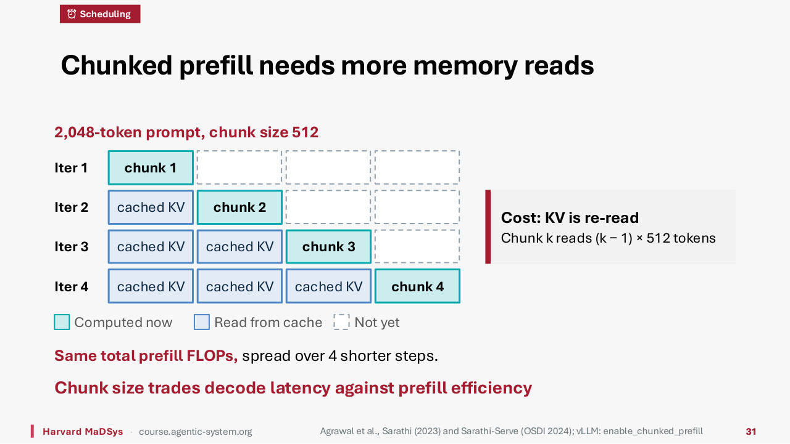
分块预填充需要更多的内存读取
2,048 token 的提示词，块大小 512：
- 迭代 1：块 1
- 迭代 2：已缓存 KV + 块 2
- 迭代 3：已缓存 KV ×2 + 块 3
- 迭代 4：已缓存 KV ×3 + 块 4
（图例：本次计算 / 从缓存读取 / 尚未处理）
- 总预填充 FLOPs 相同，只是分散到 4 个更短的步骤中
- 代价：KV 被反复读取——第 k 块要读取 (k − 1) × 512 个 token
（Agrawal et al., Sarathi (2023) 和 Sarathi-Serve (OSDI 2024)；vLLM: enable_chunked_prefill）
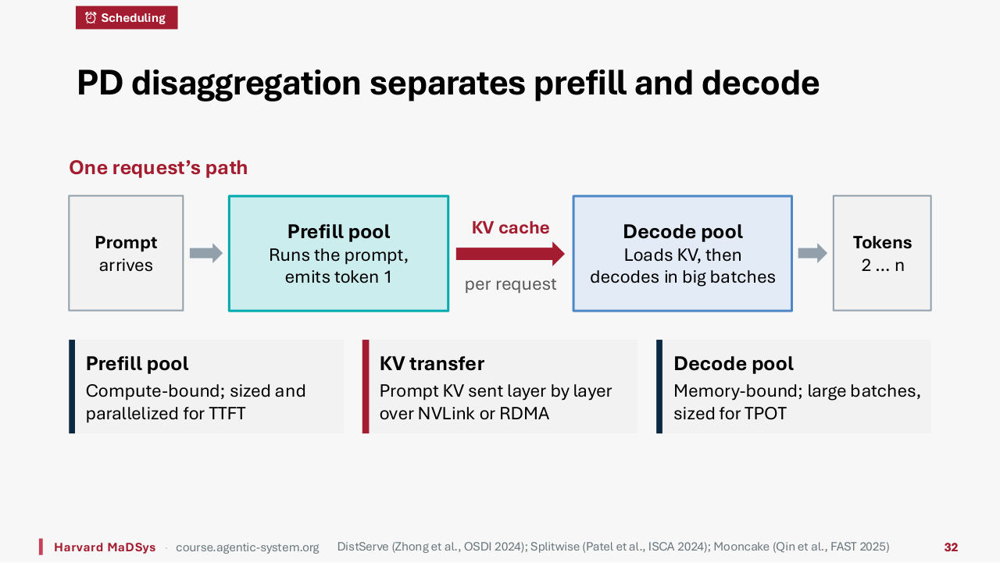
PD 分离：把预填充和解码分开
一个请求的路径：提示词到达 → 预填充池（运行提示词，输出 token 1）→ 每请求的 KV cache → 解码池（加载 KV，然后以大 batch 解码）→ token 2 … n
- 预填充池：计算受限；为 TTFT 确定规模和并行度
- KV 传输：提示词的 KV 通过 NVLink 或 RDMA 逐层发送
- 解码池：内存受限；大 batch，为 TPOT 确定规模
（DistServe (Zhong et al., OSDI 2024)；Splitwise (Patel et al., ISCA 2024)；Mooncake (Qin et al., FAST 2025)）
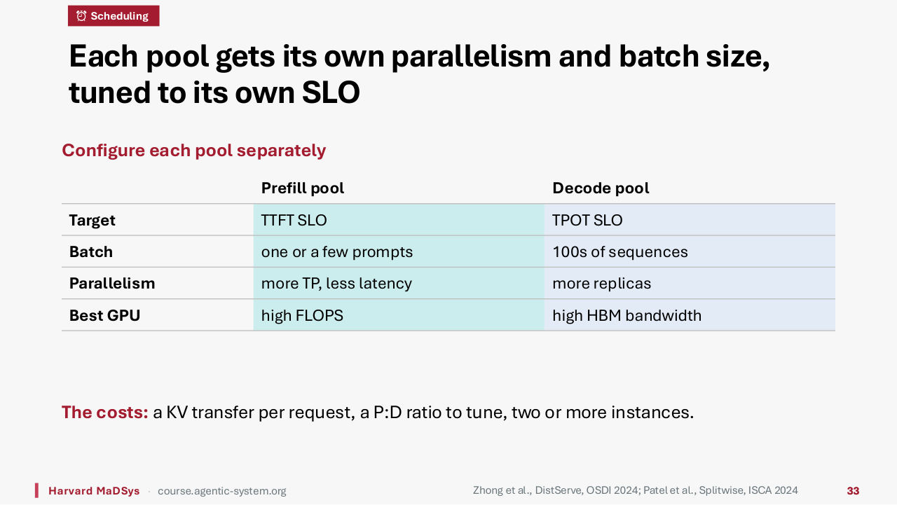
每个池有自己的并行方式和 batch 大小，针对各自的 SLO 调优
| 预填充池 | 解码池 | |
|---|---|---|
| 目标 | TTFT SLO | TPOT SLO |
| Batch | 一个或几个提示词 | 数百个序列 |
| 并行 | 更多 TP，更低延迟 | 更多副本 |
| 最合适的 GPU | 高 FLOPS | 高 HBM 带宽 |
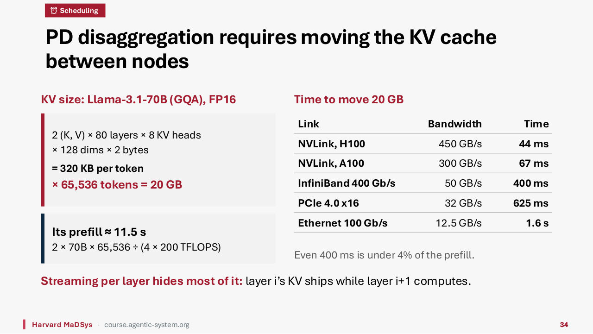
PD 分离需要在节点之间搬运 KV cache
KV 大小：Llama-3.1-70B（GQA），FP16
- 2 (K, V) × 80 层 × 8 个 KV 头 × 128 维 × 2 字节 = 每 token 320 KB
- × 65,536 个 token = 20 GB
- 它的预填充 ≈ 11.5 s：2 × 70B × 65,536 ÷ (4 × 200 TFLOPS)
搬运 20 GB 需要的时间
| 链路 | 带宽 | 时间 |
|---|---|---|
| NVLink，H100 | 450 GB/s | 44 ms |
| NVLink，A100 | 300 GB/s | 67 ms |
| InfiniBand 400 Gb/s | 50 GB/s | 400 ms |
| PCIe 4.0 x16 | 32 GB/s | 625 ms |
| 以太网 100 Gb/s | 12.5 GB/s | 1.6 s |
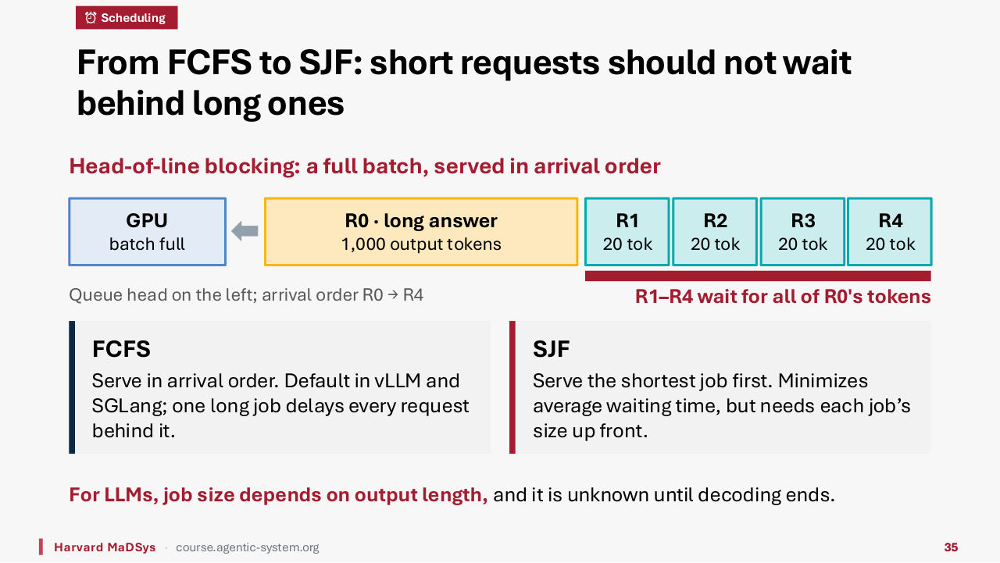
从 FCFS 到 SJF：短请求不应该排在长请求后面
队头阻塞：一个满的 batch，按到达顺序服务——R0 是长回答（1,000 个输出 token），R1–R4 各 20 个 token，R1–R4 要等 R0 的所有 token 生成完
- FCFS：按到达顺序服务。vLLM 和 SGLang 的默认策略；一个长任务会拖延后面所有请求
- SJF：最短任务优先。平均等待时间最小，但需要事先知道每个任务的大小
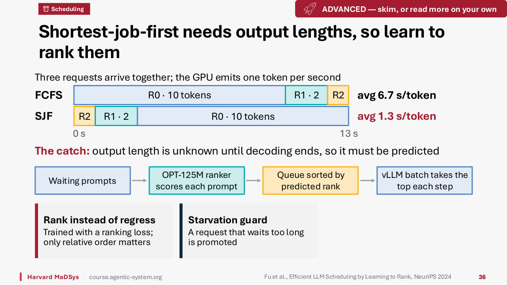
最短任务优先需要知道输出长度，那就学会给它们排序
三个请求同时到达；GPU 每秒输出一个 token：
- FCFS：R0（10 个 token）→ R1（2）→ R2——平均每 token 6.7 s
- SJF：R2 → R1（2）→ R0（10 个 token）——平均每 token 1.3 s
流程：等待中的提示词 → OPT-125M 排序器给每个提示词打分 → 按预测的排名排序队列 → vLLM 每步取最前面的组成 batch
- 排序而非回归：用排序损失训练；只有相对顺序重要
- 防饿死：等待太久的请求会被提升
（Fu et al., Efficient LLM Scheduling by Learning to Rank, NeurIPS 2024）
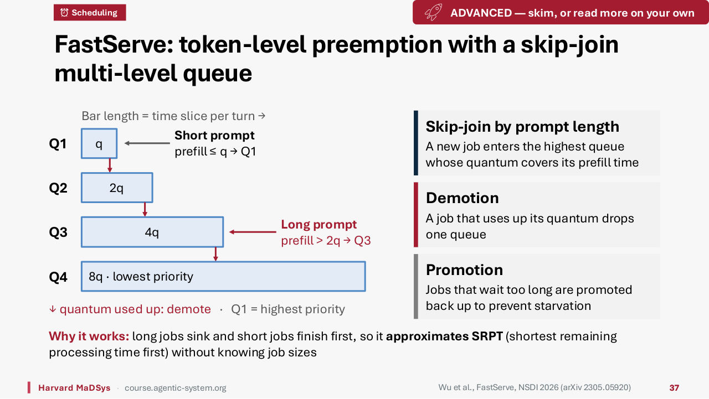
FastServe：token 级抢占 + 跳级加入的多级队列
- 队列：Q1（时间片 q，最高优先级）、Q2（2q）、Q3（4q）、Q4（8q，最低优先级）
- 按提示词长度跳级加入：新任务进入其时间片足以覆盖预填充时间的最高队列。短提示词（预填充 ≤ q）→ Q1；长提示词（预填充 > 2q）→ Q3
- 降级：用完时间片的任务下降一个队列
- 提升：等待太久的任务被提升回去，以防饿死
（Wu et al., FastServe, NSDI 2026 (arXiv 2305.05920)）
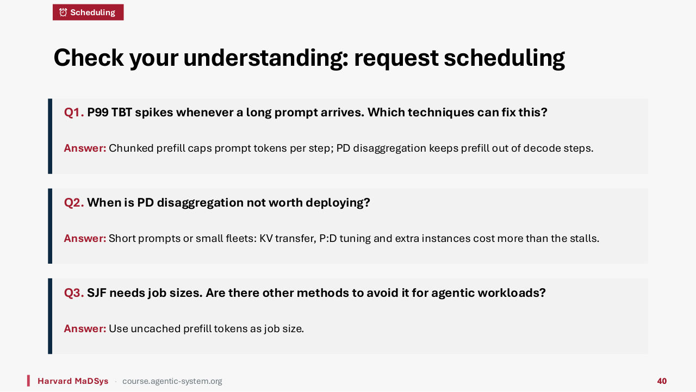
检验理解：请求调度
Q1. 每当有长提示词到达，P99 TBT 就会飙升。哪些技术能解决？
答：分块预填充限制每步的提示词 token 数；PD 分离让预填充不进入解码步。
Q2. 什么情况下不值得部署 PD 分离？
答：提示词很短或集群很小：KV 传输、P:D 调优和额外实例的成本高于卡顿的代价。
Q3. SJF 需要知道任务大小。对于智能体负载，有没有其他方法可以绕开？
答：用未命中缓存的预填充 token 数作为任务大小。
内存管理
PagedAttention
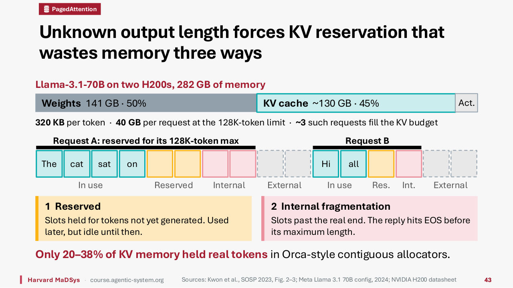
输出长度未知迫使系统预留 KV，以三种方式浪费内存
两块 H200 上的 Llama-3.1-70B，共 282 GB 显存：
- 权重 141 GB · 50%；KV cache 约 130 GB · 45%；激活值
- 每 token 320 KB · 在 128K token 上限下每个请求 40 GB · 约 3 个这样的请求就能填满 KV 预算
（图：请求 A 为它的 128K token 上限预留空间；请求 B……；图例：在用 / 预留 / 内部碎片 / 外部碎片）
- 预留：为尚未生成的 token 占着的槽位。之后会用到，但在那之前一直空闲
- 内部碎片：超出实际结尾的槽位。回复在达到最大长度之前就遇到了 EOS
- 外部碎片：分配块之间无法利用的空隙
（来源：Kwon et al., SOSP 2023, Fig. 2–3；Meta Llama 3.1 70B config, 2024；NVIDIA H200 datasheet）
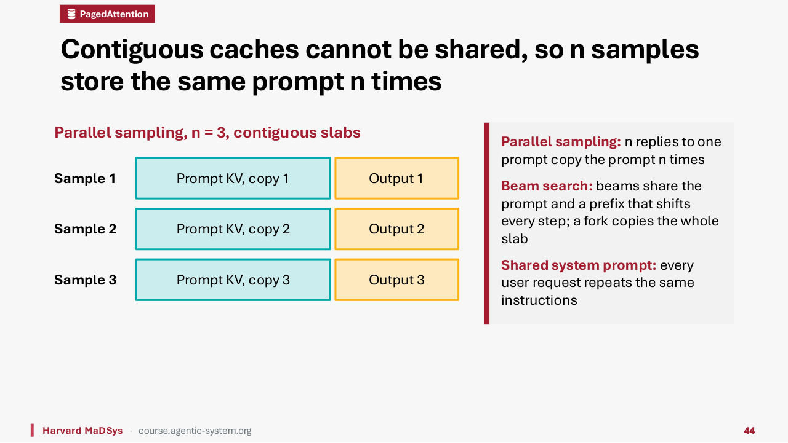
连续缓存无法共享，所以 n 个样本要把同一个提示词存 n 次
并行采样，n = 3，连续的内存块：样本 1/2/3 各自存一份提示词 KV 副本 + 各自的输出
- 并行采样：对一个提示词生成 n 个回复，要把提示词复制 n 次
- 束搜索（Beam search）：各个 beam 共享提示词和一个每步都在变化的前缀；一次分叉就要复制整个内存块
- 共享的系统提示词：每个用户请求都重复同样的指令
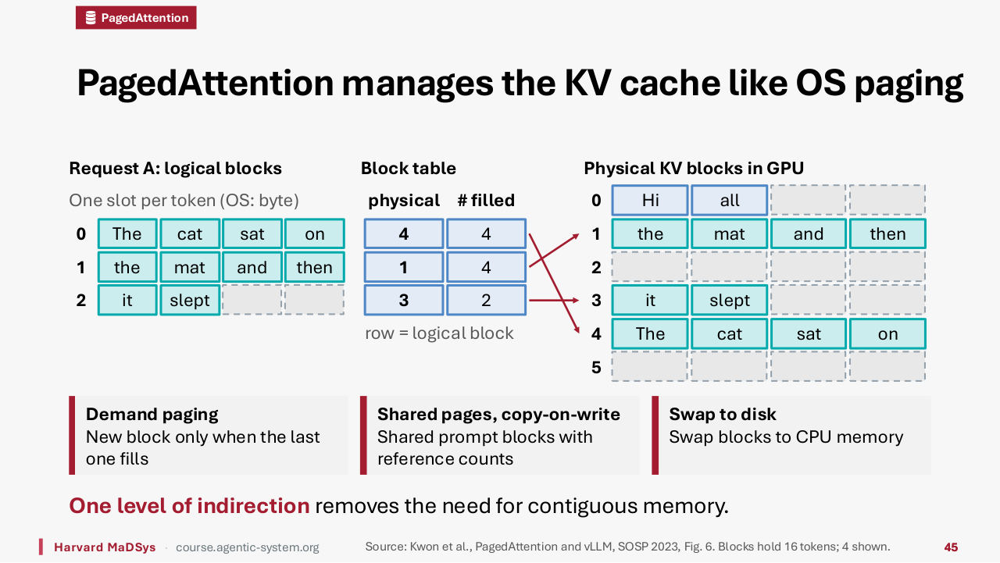
PagedAttention 像操作系统分页一样管理 KV cache
（图：请求 A 的逻辑块 → 块表（物理块号、已填充数）→ GPU 中的物理 KV 块；每个 token 一个槽位（相当于 OS 中的字节）；例句“The cat sat on the mat and then it slept”分散存放在不连续的物理块中）
- 按需分页：只有最后一个块填满时才分配新块
- 共享页面，写时复制：共享的提示词块带引用计数
- 换出到磁盘：把块换出到 CPU 内存
（来源：Kwon et al., PagedAttention and vLLM, SOSP 2023, Fig. 6。每块 16 个 token；图中画 4 个）
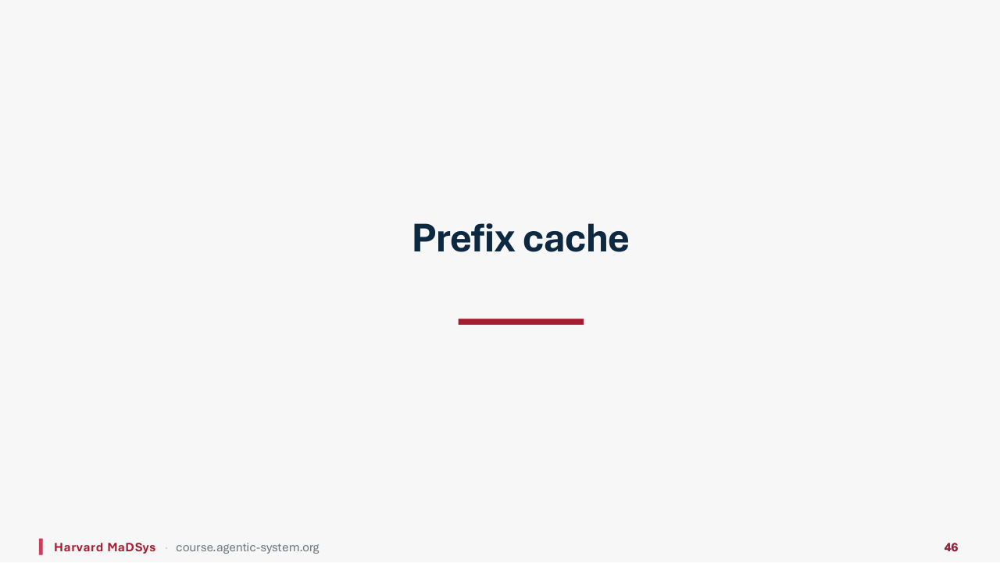
前缀缓存
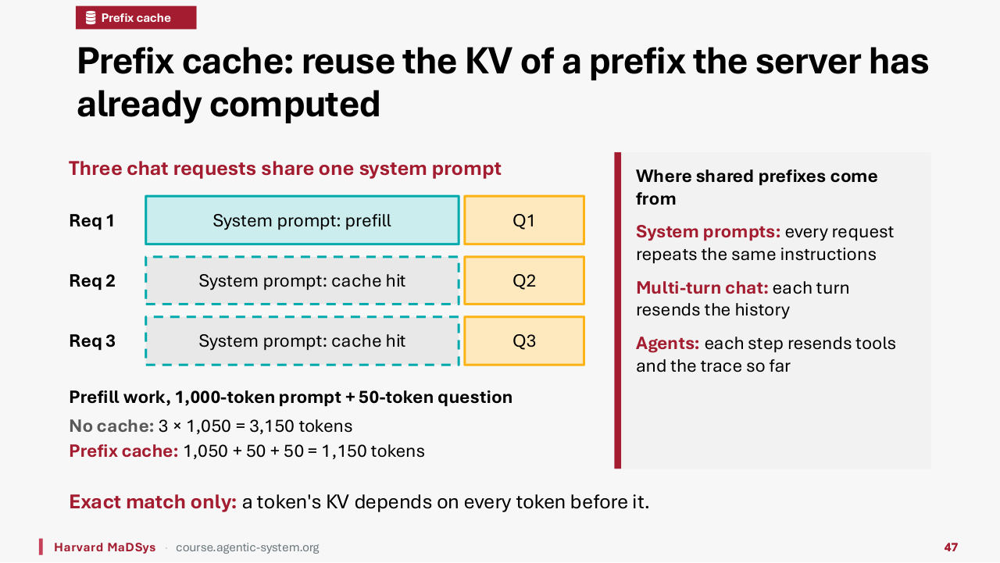
前缀缓存：复用服务器已经计算过的前缀的 KV
三个聊天请求共享一个系统提示词
- 请求 1：系统提示词——预填充；Q1
- 请求 2：系统提示词——缓存命中；Q2
- 请求 3：系统提示词——缓存命中；Q3
预填充工作量（1,000 token 提示词 + 50 token 问题）
- 无缓存：3 × 1,050 = 3,150 个 token
- 有前缀缓存：1,050 + 50 + 50 = 1,150 个 token
共享前缀从哪里来
- 系统提示词：每个请求都重复同样的指令
- 多轮对话：每一轮都重新发送历史
- 智能体：每一步都重新发送工具和迄今为止的轨迹
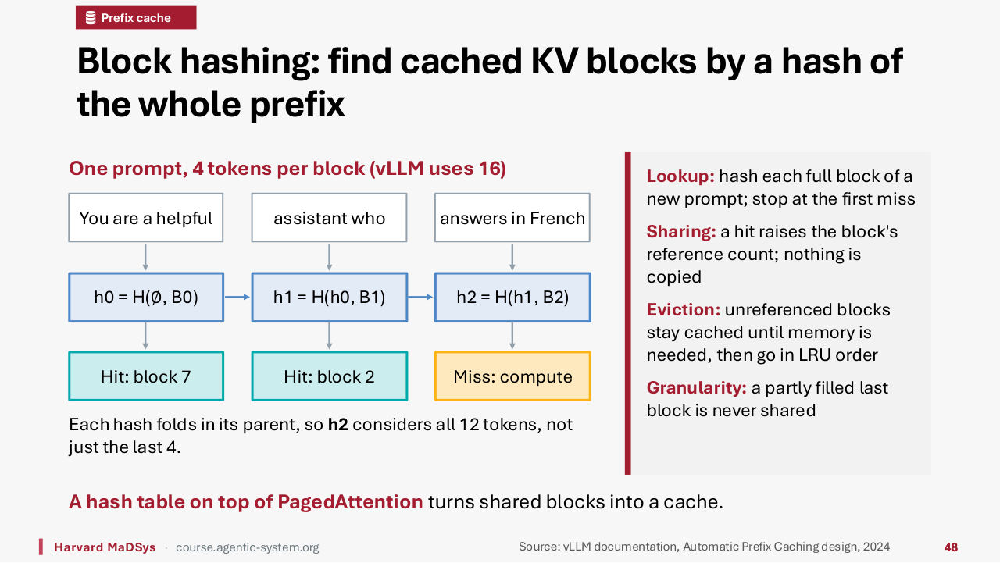
块哈希：用整个前缀的哈希来查找已缓存的 KV 块
一个提示词，每块 4 个 token（vLLM 用 16）：
- “You are a helpful” → h0 = H(∅, B0) → 命中：块 7
- “assistant who” → h1 = H(h0, B1) → 命中：块 2
- “answers in French” → h2 = H(h1, B2) → 未命中：需要计算
- 查找：对新提示词的每个完整块计算哈希；遇到第一个未命中就停止
- 共享：命中会增加该块的引用计数；不复制任何东西
- 淘汰：无引用的块继续保留在缓存中，直到需要内存时按 LRU 顺序淘汰
- 粒度：只填了一部分的最后一块永远不会被共享
（来源：vLLM documentation, Automatic Prefix Caching design, 2024）
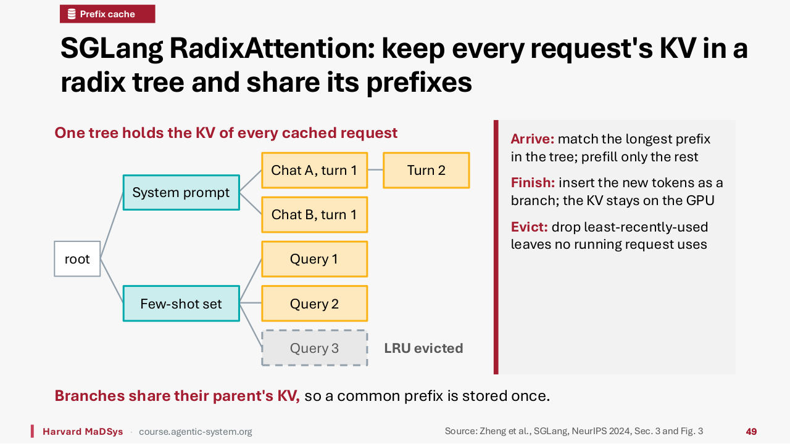
SGLang RadixAttention：把每个请求的 KV 保存在一棵基数树里，并共享其前缀
一棵树保存所有已缓存请求的 KV：
root → 系统提示词 → 少样本集合 → 查询 1 / 查询 2 / 查询 3；系统提示词 → 对话 A 第 1 轮 → 第 2 轮；对话 B 第 1 轮（已按 LRU 淘汰）
- 到达：在树中匹配最长前缀；只预填充剩下的部分
- 完成：把新 token 作为一个分支插入；KV 保留在 GPU 上
- 淘汰：丢弃没有运行中请求使用的、最近最少使用的叶子
（来源：Zheng et al., SGLang, NeurIPS 2024, Sec. 3 and Fig. 3）
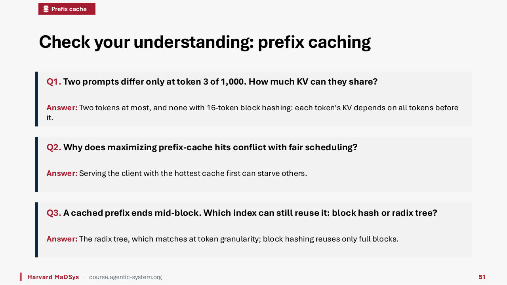
检验理解：前缀缓存
Q1. 两个 1,000 token 的提示词只在第 3 个 token 处不同。它们能共享多少 KV？
答：最多两个 token；如果用 16 token 的块哈希，则一个也不能共享：每个 token 的 KV 都取决于它之前的所有 token。
Q2. 为什么最大化前缀缓存命中会与公平调度冲突？
答：优先服务缓存最热的客户端，可能会让其他客户端饿死。
Q3. 一个已缓存的前缀在块中间结束。块哈希和基数树，哪种索引仍能复用它？
答：基数树，它按 token 粒度匹配；块哈希只复用完整的块。
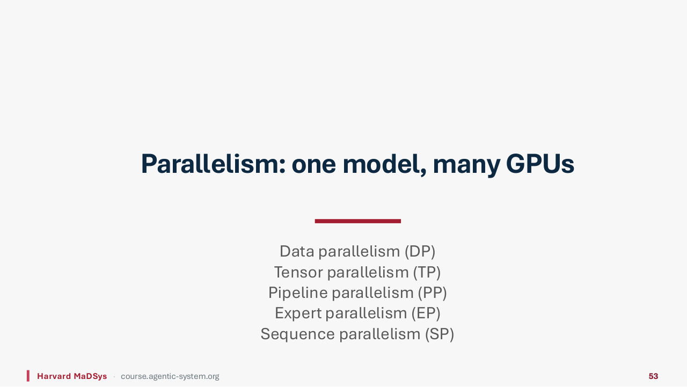
并行：一个模型，多块 GPU
- 数据并行（DP）
- 张量并行（TP）
- 流水线并行（PP）
- 专家并行（EP）
- 序列并行（SP）
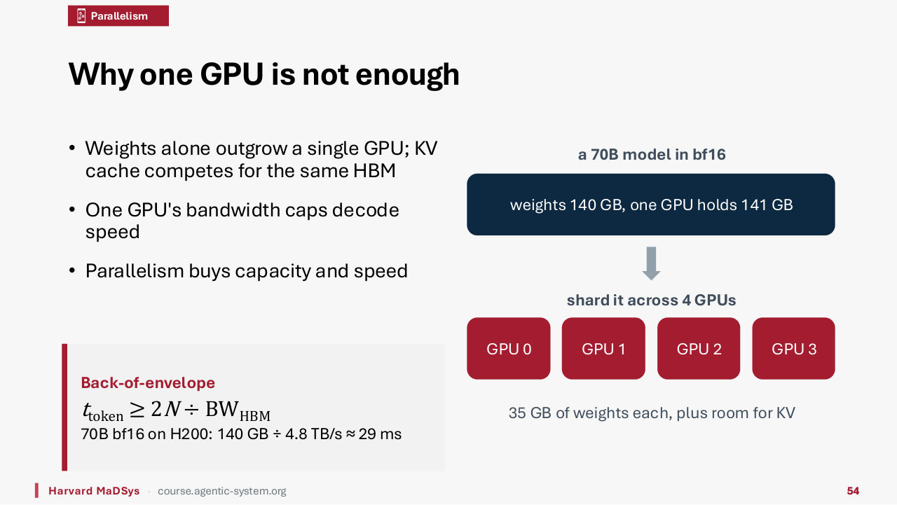
为什么一块 GPU 不够
- 光是权重就超出了单块 GPU；KV cache 还要争抢同一块 HBM
- 单块 GPU 的带宽限制了解码速度
- 并行带来容量和速度
示例：bf16 的 70B 模型，权重 140 GB，而一块 GPU 只有 141 GB → 切分到 4 块 GPU（GPU 0–3）上，每块 35 GB 权重，还有空间放 KV
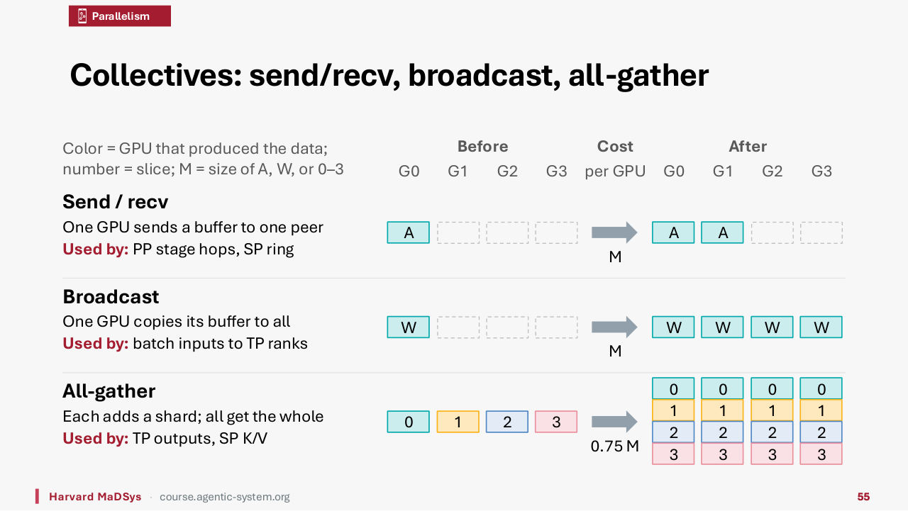
集合通信：send/recv、broadcast、all-gather
（颜色 = 产生数据的 GPU；数字 = 切片；M = A、W 或 0–3 的大小。图示 G0–G3 前后的数据分布）
- Send / recv：一块 GPU 把缓冲区发给一个对等方。用于：PP 阶段之间的传递、SP 环。每 GPU 成本：M
- Broadcast：一块 GPU 把缓冲区复制给所有人。用于：把 batch 输入分发给 TP 各 rank。每 GPU 成本：M
- All-gather：每块 GPU 贡献一个分片，所有人都拿到完整数据。用于：TP 输出、SP 的 K/V。每 GPU 成本：0.75 M
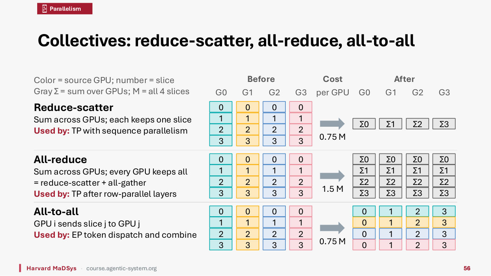
集合通信：reduce-scatter、all-reduce、all-to-all
（颜色 = 来源 GPU；数字 = 切片；灰色 Σ = 跨 GPU 求和；M = 全部 4 个切片）
- Reduce-scatter：跨 GPU 求和；每块 GPU 保留一个切片。用于：配合序列并行的 TP。每 GPU 成本：0.75 M
- All-reduce：跨 GPU 求和；每块 GPU 都保留全部 = reduce-scatter + all-gather。用于：TP 中行并行层之后。每 GPU 成本：1.5 M
- All-to-all：GPU i 把切片 j 发给 GPU j。用于：EP 的 token 分发与合并。每 GPU 成本：0.75 M
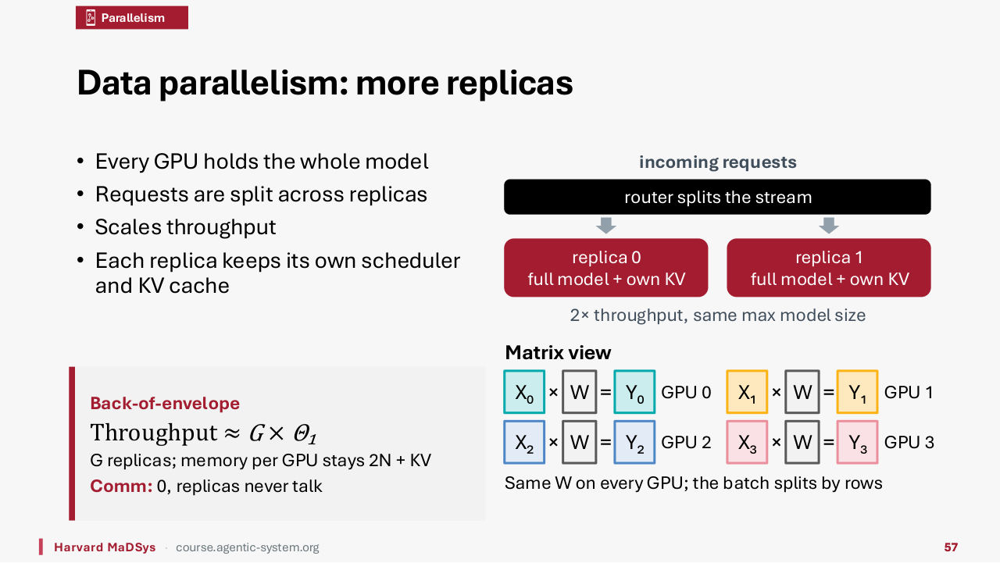
数据并行：更多副本
- 每块 GPU 都保存完整模型
- 请求被分配到各个副本
- 扩展吞吐量
- 每个副本有自己的调度器和 KV cache
（图：进入的请求 → 路由器拆分请求流 → 副本 0（完整模型 + 自己的 KV）/ 副本 1（完整模型 + 自己的 KV）——吞吐 2 倍，可支持的最大模型不变）
矩阵视角：X₀ × W = Y₀（GPU 0）……X₃ × W = Y₃（GPU 3）——每块 GPU 上 W 相同；batch 按行拆分
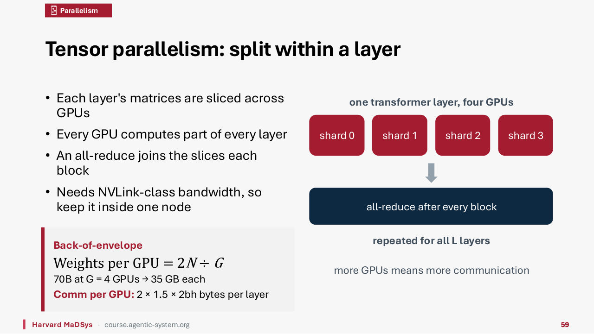
张量并行：在层内切分
- 每一层的矩阵被切分到多块 GPU 上
- 每块 GPU 计算每一层的一部分
- 每个块之后用一次 all-reduce 把切片合起来
- 需要 NVLink 级别的带宽，所以要放在一个节点内
（图：一个 Transformer 层，四块 GPU，分片 0–3；每个块之后 all-reduce；对全部 L 层重复；GPU 越多通信越多）
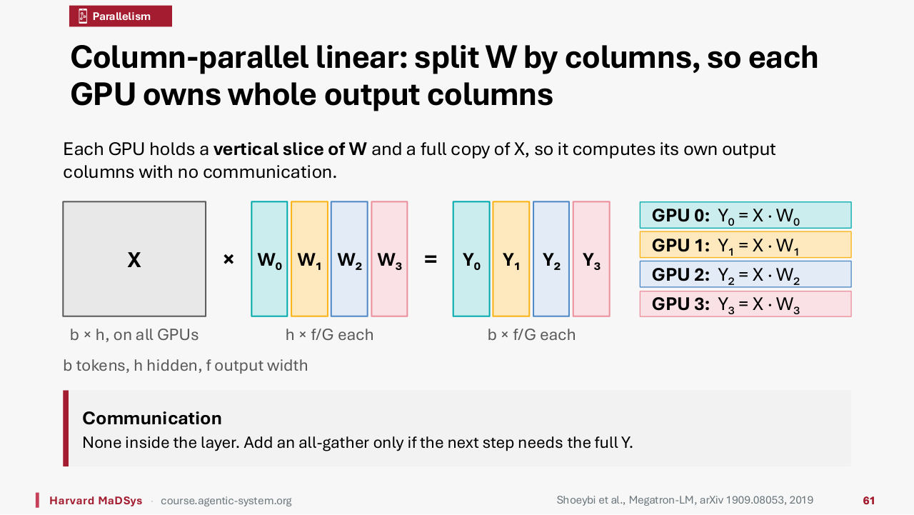
列并行线性层：按列切分 W，每块 GPU 拥有完整的输出列
每块 GPU 持有 W 的一个竖切片和 X 的完整副本，所以无需通信就能计算出自己的输出列。
- X（b × h，所有 GPU 上都有）× [W₀ W₁ W₂ W₃]（每块 h × f/G）= [Y₀ Y₁ Y₂ Y₃]（每块 b × f/G）
- GPU i：Yᵢ = X · Wᵢ
- b 个 token，h 为隐藏维度，f 为输出宽度
（Shoeybi et al., Megatron-LM, arXiv 1909.08053, 2019）
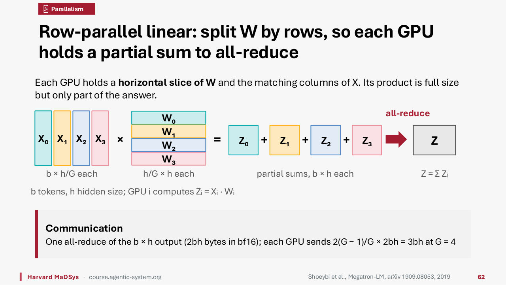
行并行线性层：按行切分 W，每块 GPU 持有一个部分和，再做 all-reduce
每块 GPU 持有 W 的一个横切片和 X 中对应的列。它的乘积是完整尺寸的，但只是答案的一部分。
- [X₀ X₁ X₂ X₃]（每块 b × h/G）× [W₀; W₁; W₂; W₃]（每块 h/G × h）= Z₀ + Z₁ + Z₂ + Z₃（部分和，每块 b × h）→ all-reduce → Z = Σ Zᵢ
- GPU i 计算 Zᵢ = Xᵢ · Wᵢ
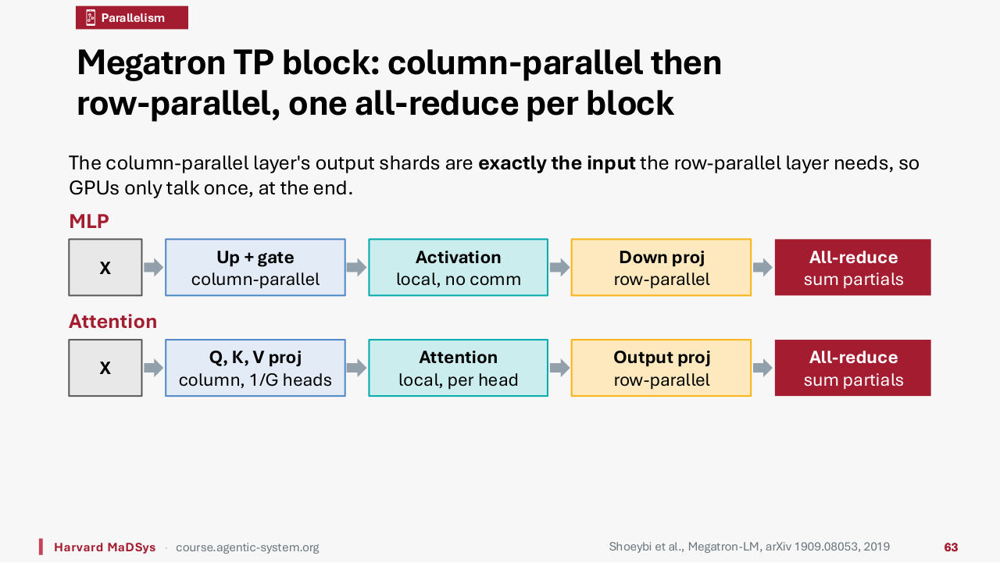
Megatron TP 块：先列并行再行并行，每个块一次 all-reduce
列并行层输出的分片，恰好就是行并行层需要的输入，所以 GPU 之间只需在最后通信一次。
- MLP：X → Up + gate（列并行）→ 激活（本地，无通信）→ Down 投影（行并行）→ All-reduce（部分和求和）
- 注意力：X → Q、K、V 投影（列并行，每块 1/G 的头）→ 注意力（本地，按头）→ 输出投影（行并行）→ All-reduce（部分和求和）
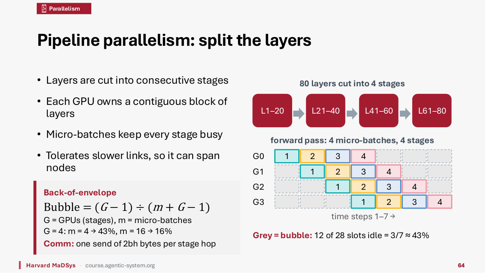
流水线并行：切分层
- 层被切成连续的阶段
- 每块 GPU 拥有一段连续的层
- 微批次让每个阶段保持忙碌
- 能容忍较慢的链路，所以可以跨节点
（图：80 层切成 4 个阶段：L1–20、L21–40、L41–60、L61–80；前向传播：4 个微批次、4 个阶段，时间步 1–7；灰色 = 气泡：28 个槽位中 12 个空闲 = 3/7 ≈ 43%）
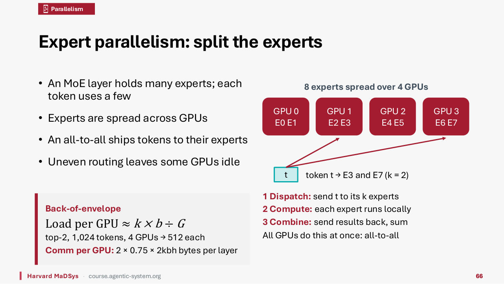
专家并行：切分专家
- 一个 MoE 层有许多专家；每个 token 只用其中几个
- 专家分散在多块 GPU 上
- 一次 all-to-all 把 token 运送到它们的专家那里
- 路由不均会让一些 GPU 闲着
（图：8 个专家分布在 4 块 GPU 上——GPU 0：E0 E1；GPU 1：E2 E3；GPU 2：E4 E5；GPU 3：E6 E7；token t → E3 和 E7（k = 2））
- 分发：把 t 发送给它的 k 个专家
- 计算：每个专家在本地运行
- 合并：把结果发回并求和
所有 GPU 同时这样做：all-to-all
上下文并行：切分 token
- 长提示词超出了一块 GPU
- 每块 GPU 持有一段 token
- 环形注意力（Ring attention）传递 K/V 块
- 对预填充有帮助，对解码没有
（图：一个 128K token 的提示词分到 4 块 GPU：0–32K、32–64K、64–96K、96–128K；把 K/V 块传给下一块 GPU；每个 query 仍能看到每个 key；传输与注意力计算重叠）
TP 和 EP 每 token 搬运的字节比 PP 多 240 倍
| 策略 | 集合通信 | 频率 | 每 token 每 GPU 字节数 |
|---|---|---|---|
| 数据并行 | 无 | 从不 | 0 |
| 张量并行（G = 4） | all-reduce | 每层 2 次 | 3.9 MB |
| 流水线并行（G = 4） | send / recv | 每次阶段传递 1 次 | 16 KB |
| 专家并行（G = 4，top-2） | all-to-all | 每个 MoE 层 2 次 | ≈ 3.9 MB |
TP 和 EP 需要 NVLink
每 GPU 的链路带宽（每方向 GB/s），H100 SXM：
- InfiniBand NDR 400 Gb/s：50 GB/s
- PCIe Gen5 x16：64 GB/s
- NVLink 4（双向 900 GB/s）：450 GB/s
一次传输的成本：t = 字节数 ÷ 带宽 + 跳数 × 延迟
- 张量并行流量，每 token 每 GPU 3.9 MB：NVLink ≈ 9 µs；InfiniBand ≈ 78 µs，外加开销
检验理解：并行
Q1. 一个 70B bf16 模型，放在一个有 4 块 H200（每块 140 GB）的节点上。先用哪种切分，为什么？
答：在 NVLink 上用 TP = 4，还是 DP2 + TP2，取决于上下文大小。
Q2. 你又加了一个节点。用哪种并行？
答：跨节点用 PP：每个 token 只需一次 2h 字节的传递，而 TP 每层都要 all-reduce，流量约多 240 倍。
Q3. 为什么 DP 注意力 + EP 在长上下文上能胜过 TP，在短上下文上却不如它？
答：长上下文：当 KV 头数少于 rank 数时，TP 会复制 KV，而 DP 支持更大的 batch。短上下文：all-to-all 开销占主导。
并行：要点总结
- 数据并行扩展吞吐量：G 个副本服务 G 倍的请求，但每个副本都必须装下整个模型
- 张量并行降低每 token 延迟：每块 GPU 只读 1/G 的权重，代价是每层都要 all-reduce；要放在一个 NVLink 节点内
- 流水线并行和序列并行增加容量：流水线以很小的流量跨节点，但会引入气泡；序列并行切分超长提示词
- 专家并行服务 MoE 模型：专家分布在多块 GPU 上；代价是 all-to-all 流量和专家负载不均
下节课：推测解码
今天内容速览
- 测量：TTFT 和 TBT 分位数、有效吞吐
- 批处理：连续批处理、选择性批处理
- 调度：请求调度、分块预填充、PD 分离
- 内存管理：分页、共享 KV cache
- 并行：DP、TP、PP、EP、SP
选读材料
选读：各部分背后的论文
- 评测：Agrawal et al., On Evaluating Performance of LLM Inference Systems, arXiv 2025
- 批处理与调度：Yu et al., Orca, OSDI 2022；Agrawal et al., Sarathi-Serve, OSDI 2024；Sheng et al., Fairness in Serving LLMs, OSDI 2024
- PD 分离：Zhong et al., DistServe, OSDI 2024
- KV-cache 内存：Kwon et al., PagedAttention and vLLM, SOSP 2023；Zheng et al., SGLang, NeurIPS 2024
- 并行：Shoeybi et al., Megatron-LM, arXiv 2019；Korthikanti et al., Reducing Activation Recomputation, MLSys 2023；Thakur, Rabenseifner and Gropp, Collective Operations in MPICH, IJHPCA 2005